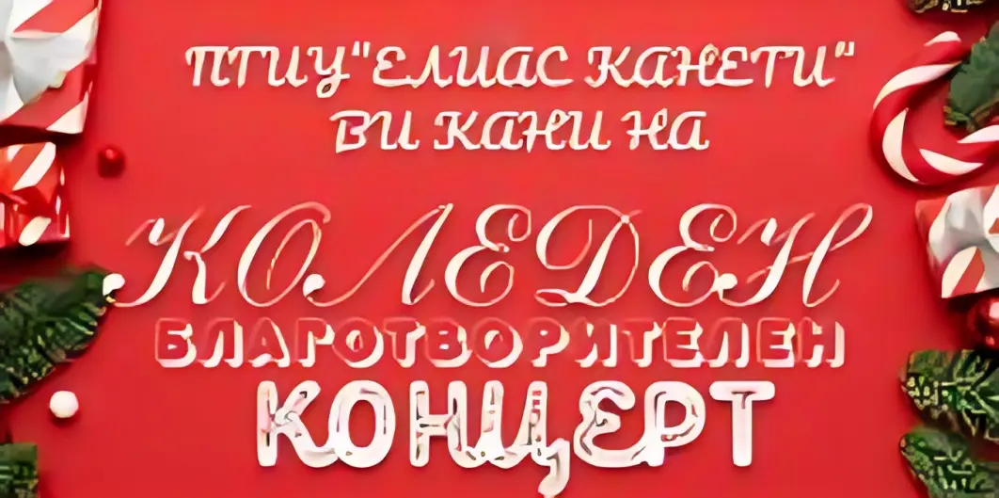
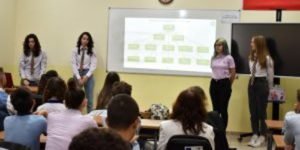
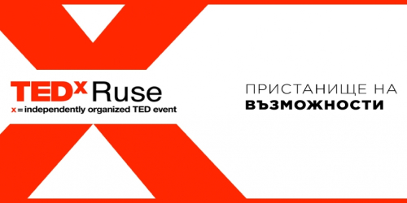

Коледен концерт
На 18.12.2023 г. ПГИУ „Елиас Канети“ – Русе открива своята
традиционна инициатива – Коледен благотворителен концерт. Тази година той ще се състои в
„Канев
център“ от 17,30 ч. Благотворителната акция е за набиране на средства за Фондация
„Александър
Русев“ за подпомагане на деца със специални образователни потребности.
Прочетете
повече
Световната седмица на предприемачеството
В навечерието на Световната седмица на предприемачеството
с
любезно съдействие на Джуниър Ачийвмънт – България, в час по Предприемачество в 8В клас,
специалност „Електронна търговия“ учениците участваха в инициативата под наслов „Аз съм
предприемач“.
Прочетете
повече


TEDxRuse
Ученици от ПГИУ „Елиас Канети“ решиха да посветят съботния си ден на събитието TEDxRuse.
Заедно с госпожа Соня Арнаудова, те съпреживяха историите на 12-те лектори- всеки по свой
си начин уникален и стойностен.
Прочетете
повече